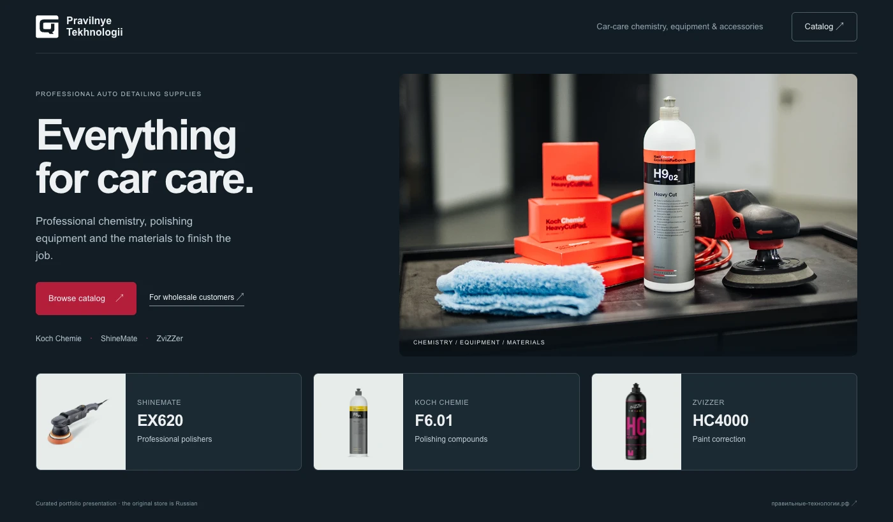
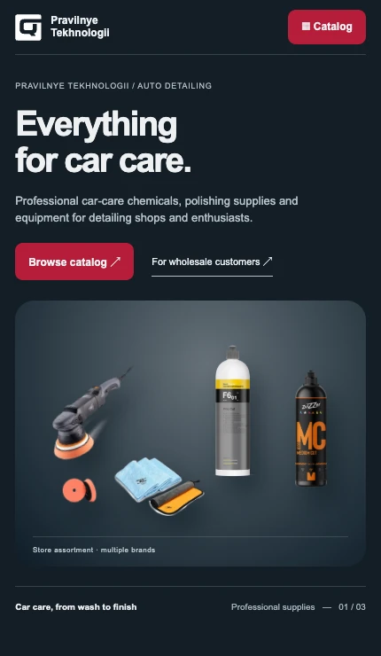

Koch Chemie
Car-care chemistry, polishing and finishing.
CASE 03 · LIVE PROJECT · RUSSIA
A multi-brand automotive detailing store in Russia, bringing professional car-care chemicals, polishing equipment and accessories into one clearer catalog experience.
A composed product group makes the store's range immediately visible. A direct route into the catalog sits beside a separate wholesale enquiry path.

Locally authored, translated portfolio presentation. The original live website is Russian.
Brand browsing gives buyers a familiar starting point. Product families offer another route for those looking for a material or a tool.
Car-care chemistry, polishing and finishing.

Professional polishing equipment.

Automotive cosmetics and care.

Leather care and colour restoration.
On a narrow screen the headline and catalog action sit before the product group. The range stays visible without shrinking a desktop page.
